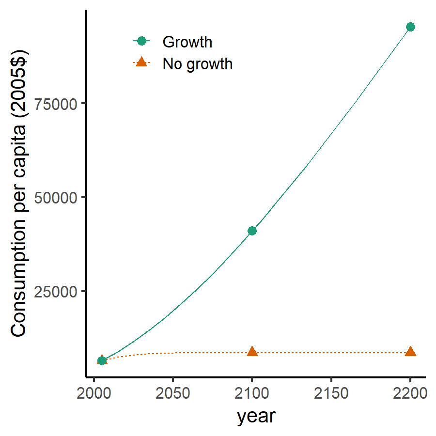
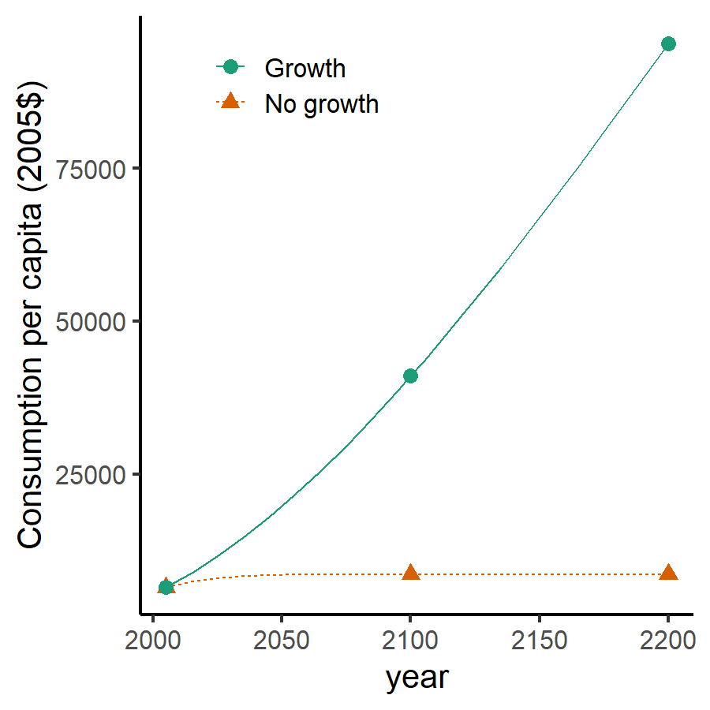
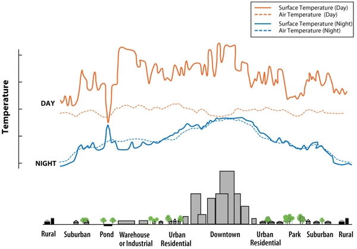
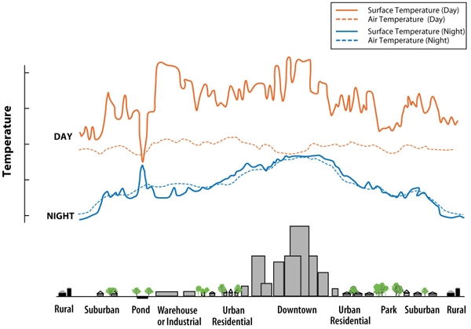

Impacts of Climate Change,
Pt. 1
EES 3310/5310
Global Climate Change
Jonathan Gilligan
Class #21: Monday, March 14 2022
Economic Growth
 

Agricultural Price Shocks

Image credit: IPCC Fifth Assessment Report, Working Group 2, Chapter 7
Urban Heat Islands
 

Source: Environmental Protection Agency
Urban Heat Mortality
Chicago, 1995

Source: USGCRP, The Impacts of Climate Change on Human Health in the United States: A Scientific Assessment (2016).
Climate Change and Deadly Heat

Source: C. Mora et al., Nature Climate Change 7, 501 (2017)
Low-Elevation Coastal Zone

|
|

Greenland
- Melt descending into Moulin
- Meltwater lubricates base of glacier
- Accelerates ice-flow
- Speeds up melting

Peterman Glacier 2009

Ice Loss from Greenland

Image credit: M. Tedescoo et al., NOAA Arctic Program
Antarctica

GRACE Satellite

Image credit: NASA
Observations

Image credit: Arnoud Jochemsen, Technical University of Dresden
Ice loss

Image credit: IMBIE Team, Nature 558, 219 (2018) doi: 10.1038/s41586-018-0179-y
Impacts
- Population displacement, migration
- Amplified impacts of coastal storms
- Coastal ecosystems
- World Heritage Sites

Photo credit: Soumyajit Nandy
Adaptation
- Abandon vulnerable land
- Protect valuable land
- Raise buildings
- Move inland

Photo credit: Wikipedia